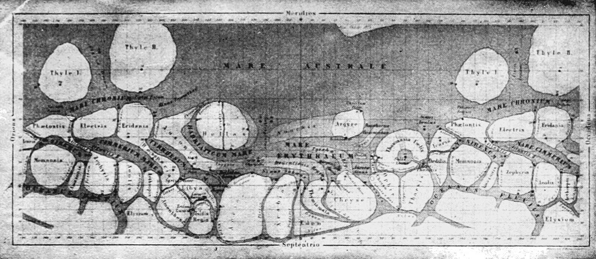

The canals of Mars were a network of long, straight linear features reportedly observed on the Martian surface by telescopic astronomers between the 1870s and the early twentieth century. They are now understood to be an optical illusion produced by the limited resolving power of the instruments of the era combined with the tendency of the human visual system to connect discrete, faint details into continuous lines. No such features exist on Mars.

Popular Science Monthly vol. 61 / Wikimedia Commons (public domain)
{kind=link}
Schiaparelli and the Canali
During the favourable opposition of 1877, Italian astronomer Giovanni Schiaparelli observed Mars from the Brera Observatory in Milan and produced a detailed map of the Martian surface. On that map he recorded a series of dark, elongated markings which he termed canali—an Italian word meaning channels or grooves, carrying no implication of artificial origin. The term was translated into English as "canals," a word that denotes a constructed waterway. This linguistic accident proved consequential. Schiaparelli himself remained cautious about the nature of the features, but the English rendering invited speculation that the markings were evidence of engineering rather than geology.
Schiaparelli continued observing Mars at subsequent oppositions and reported that some canali appeared to double—splitting into two parallel lines—a phenomenon he called gemination. Other observers failed to replicate the observation consistently, and no consensus on the doubling was reached.
Percival Lowell and the Martian Civilisation Hypothesis
The astronomer Percival Lowell did the most to elevate the canal hypothesis to public prominence. In 1894 he founded an observatory at Flagstaff, Arizona, specifically to study Mars, and over the following two decades he produced extensive observations and three popular books: Mars (1895), Mars and Its Canals (1906), and Mars As the Abode of Life (1908). Lowell argued that the canals formed a global irrigation network built by an intelligent but dying civilisation, transporting melt water from the polar ice caps to arid equatorial regions. In his model, Mars was an older planet than Earth, further along an evolutionary path toward aridity, and its inhabitants had responded by constructing a solar system-scale feat of hydraulic engineering.
Lowell's writings were widely read and shaped popular images of Mars for a generation. His ideas also prompted direct scientific responses. Many professional astronomers—particularly in Europe—were sceptical from the outset, and several independent observing programmes failed to confirm the network of straight lines he described.
Experimental and Observational Refutation
Two investigations in the early twentieth century established that the canals were artefacts of perception rather than real surface features. In 1903 E. W. Maunder and J. E. Evans conducted an experiment at the Royal Greenwich Observatory in which schoolboys were asked to draw a disc bearing irregular, randomly placed dots at a distance at which the disc subtended an angle comparable to that of Mars as seen through a telescope. The subjects consistently connected the discrete dots into straight lines, demonstrating that linear features at the resolution limit of vision are a product of the observer rather than the object.
In 1909, during a particularly favourable opposition, the Greek-French astronomer Eugène Antoniadi observed Mars with the 83‑cm refractor at the Meudon Observatory near Paris—then among the largest telescopes in the world. At high magnification and under steady seeing, he recorded complex, irregular surface markings but no canals. He concluded that the linear features reported by others were "no more than an effect produced by very minute details" that smaller instruments rendered as continuous lines. His maps, widely regarded as the most accurate pre-spacecraft record of the Martian surface, showed no trace of a canal network.
Final Resolution: Mariner 4
The canal question was definitively settled on 14 July 1965, when the NASA spacecraft Mariner 4 made the first close flyby of Mars and returned 21 photographs covering roughly one per cent of the surface. The images revealed a barren, heavily cratered terrain broadly resembling the lunar highlands. Radio occultation measurements indicated an atmosphere of only 4.1–7.0 mbar—far too thin to sustain liquid water—and surface temperatures near −100°C. No canals, no irrigation works, and no signs of a technological civilisation were present. Subsequent missions confirmed and extended these findings across the entire planet.
Cultural Legacy
Although the canal hypothesis had been scientifically discredited before the space age, it left a durable cultural imprint. H. G. Wells drew on Lowell's imagery in The War of the Worlds (1898), presenting Mars as an older, desiccated world whose inhabitants coveted the resources of Earth. Edgar Rice Burroughs set his Barsoom series on a canal-threaded Mars. The Lowell Observatory at Flagstaff, founded to study the canals, later became the site of Clyde Tombaugh's discovery of Pluto in 1930.